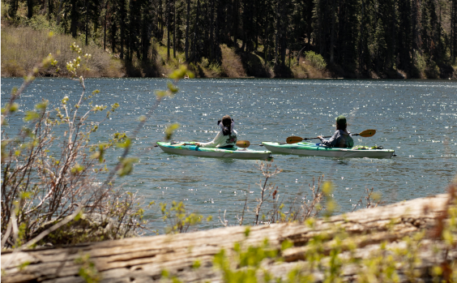
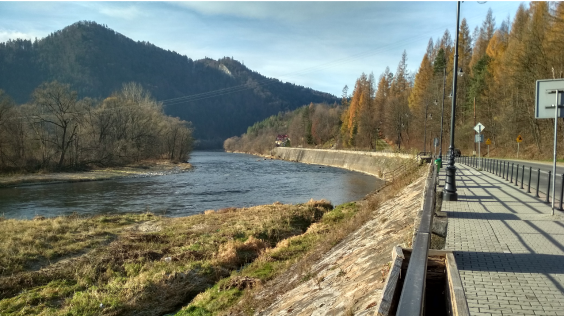
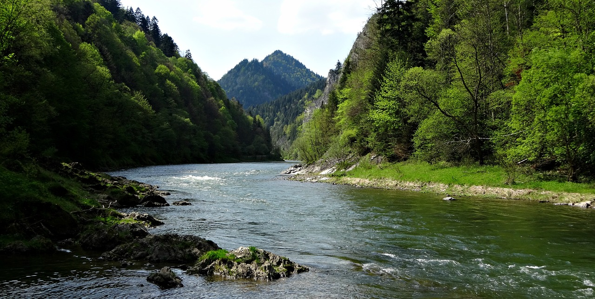
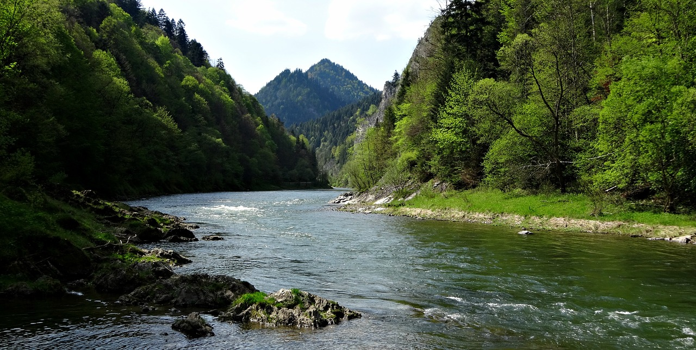
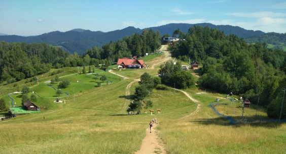
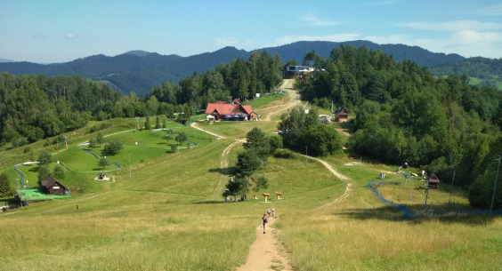
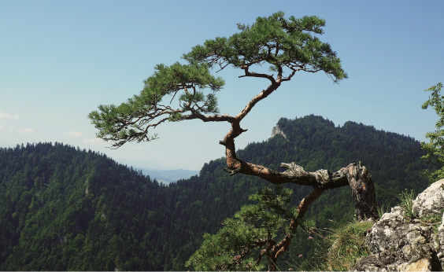

Atrakcje Szczawnicy
Szczawnica
Szczawnica położona jest w pięknej dolinie Grajcarka prawobrzeżnego dopływu Dunajca. Dolina ta rozdziela Małe Pieniny od Beskidu Sądeckiego. To górskie uzdrowisko leży na wysokości ok. 500 m npm. Wyjątkowe położenie doliny powoduje, że panuje tutaj łagodny, a zarazem wyjątkowy mikroklimat. Decydujący wpływ na to mają między innymi porastające zbocza dolin lasy, duże nasłonecznienie, mała ilość opadów i czyste powietrze.
Oprócz wspaniałego mikroklimatu, Szczawnica położona jest w malowniczym krajobrazie, który miasto zawdzięcza bliskości Pienińskiego Parku Narodowego i przełomu Dunajca. Od północy miasto otacza masyw pasma Radziejowej (984 m) zaś od południa Małe Pieniny ze szczytami: Rabsztyn (847m) i Wysoka (1052m) oraz dalej u ujścia doliny Pieninami z Sokolicą (747m) i Trzema Koronami (982m). Wszystko to sprawia, że Szczawnica zaliczana jest do najatrakcyjniejszych miejscowości turystycznych w Polsce.
Atrakcje
Spływ Dunajcem - na flisackiej tratwie to niezwykłe spotkanie z dziką, niezmienioną od tysiącleci przyrodą - jedna z największych atrakcji turystycznych Europy. Jednocześnie to najlepszy sposób na zwiedzanie Pienińskiego Parku Narodowego. Tradycja spływu sięga 1 połowy XIX wieku. W swoim biegu Dunajec wyżłobił w wapiennych turniach Pienin romantyczny wąwóz, zwany Przełom Dunajca. Drewnianą tratwą zbudowaną z połączonych ze sobą wąskich łódek, płyniemy głębokim i krętym kanionem. Dunajec wije się i kluczy pomiędzy stromymi skałami. Widoki roztaczające się wokół, zapierają dech w piersiach, zmieniając się w bardzo szybkim tempie. W trakcie podróży flisacy barwnie opowiadają o Pieninach, przytaczając legendy o Janosiku. Sezon trwa od maja do października. Początek trasy spływu to przystań Sromowce - Kąty. Tratwami flisackimi pokonuje się 7 pętli w czasie zależnym od stanu wody - od 2 do 3 godzin. Jedna tratwa zabiera maksymalnie 12 osób dorosłych (+ dwóch flisaków). Przystań końcowa to Szczawnica Niżna.
  

Rafting na Dunajcu - Spływ pontonami rzeką odbywa się na trasie Sromowce Wyżne - Szczawnica. Przeznaczony jest zarówno dla zaawansowanych jak i początkujących uczestników. Mogą w niej uczestniczyć także dzieci. Chłód wody, górskie powietrze, piękno pienińskiego krajobrazu spowodują, że zapomnicie o stresach dnia codziennego.
Spływ kajakiem na Dunajcu - Spływy kajakowe po rzekach górskich w pneumatycznych dwuosobowych jednostkach pod opieką instruktora nie wymagają dużych umiejętności technicznych dając za to dużą satysfakcję z pokonania rzeki. Pneumatyczne kanadyjki pozwolą na bezproblemowe pływanie nawet początkującym kajakarzom. Nad grupą czuwa instruktor w kajaku jednoosobowym, który pomoże w krytycznej sytuacji lub wskaże właściwą drogę na wodzie.
Velo Dunajec to trasa rowerowa uznawana za najpiękniejszy szlak w Małopolsce. Przecina 7 pasm górskich, objeżdża 3 duże jeziora, a po drodze zobaczyć można 7 zamków. Warto wspomnieć również, że Velo Dunajec na południu łączy się ze Szlakiem Wokół Tatr.
Oprócz atrakcji wodnych polecamy również: wycieczki piesze, rowerowe, przejażdżki konne, hipoterapię, wyjazdy w teren, rajdy, przejażdżki bryczkami, saniami.
 

Rezerwat przyrody Wąwóz Homole: ma długość ok. 800 m i wcina się w północne stoki Wysokich Skałek, tworząc głęboki kanion o bardzo stromych ścianach dochodzących do 120 m wysokości. Zbudowany jest z wapieni krynoidowych serii czorsztyńskiej (widoczne są w dolnej części wąwozu) i serii niedzickiej (widoczne w górnej części wąwozu i nasunięte od południa na wapienie serii czorsztyńskiej). Wąwóz powstał w wyniku tektonicznych fałdowań w górnej kredzie. Dużą rolę w jego wyżłobieniu odegrał również płynący nim Kamionka. Tworzy on w wąwozie kaskady, a jego koryto zawalone jest wielkimi głazami. Głównym celem jego powstania była ochrona krajobrazu i cennych osobliwości przyrody nieożywionej i ożywionej.
W wapiennych skałach wąwozu gniazduje pustułka, sokół, puchacz. W wąwozie spotkać też można pluszcza i pliszkę górską. Z płazów występuje salamandra plamista i żaba trawna. (źródło: wikipedia).
Rezerwaty przyrody
Rezerwat przyrody Wysokie Skałki: rezerwat przyrody na terenie województwa małopolskiego, w gminie Szczawnica, położony na najwyższym szczycie Pienin - Wysokiej (1050 m n.p.m.). Znajduje się na obszarze Małych Pienin, na granicy ze Słowacją, na wysokości 900-1050 m n.p.m. Jest rezerwatem krajobrazowym i leśnym, utworzony został w 1961 r. Początkowo miał obszar 10,9 ha, później powiększono go do 13,9ha.
Ochronie podlega tu jedyny zachowany w Pieninach fragment górnoreglowego naturalnego lasu świerkowego. W latach 1947-1957 podczas zagospodarowywania opuszczonych przez Łemków terenów Pienin, został silnie przetrzebiony, jednak po kilkudziesięciu latach odtworzył się. W runie leśnym i na niewielkich niezalesionych miejscach występują m. in takie rzadkie rośliny, jak: lilia złotogłów, powojnik alpejski, tojad dzióbaty, wawrzynek wilczełyko, jaskier platanolistny, modrzyk górski. Ciekawa jest też fauna ptaków; gniazdują tu: puchacz, myszołów, orlik krzykliwy. Rezerwat ma też duże walory krajobrazowe. Z nagiego wierzchołka rozciągają się imponujące widoki na: Pasmo Radziejowej, Babią Górę, Tatry i Pieniny. Od wschodniej strony wierzchołka Wysokiej urwiste wapienne skały o wysokości 5-20 m. (źródło: wikipedia)
Wyciągi narciarskie
Arena Narciarska – Jaworki zawierająca : 2-osobową kolej linową o długości 621m i różnicy poziomów 116m oraz 2 wyciągi orczykowe talerzykowe o długości 200m i różnicy poziomów 120m.
Wyciąg narciarski "Pod Durbaszką" w Jaworkach, orczykowy o długości 550 m. - różnica wzniesień 112 m. obok wyciągu schronisko z wyżywieniem i noclegami
Halfpipe - rynna śnieżna do snowboardu, pełnowymiarowa wraz z wyciągiem orczykowym na południowym stoku Palenicy.
Kolej linowa - krzesełkowa na Palenicę o długości 783 m., różnica wzniesień 260m. (stok Palenica I - sztucznie śnieżony o długości 1000 m. różnica wzniesień 250m, homologowany przez władze FIS i PZN, stok Palenica II o długości 1800 m., różnica wzniesień 270 m - trasa biegnąca ze szczytu Szafranówki, aż do podnóża Palenicy gdzie łączy się z trasą Palenica I, stok Szafranówka - dwa równoległe wyciągi orczykowe o długości 350 m, różnica wzniesień 75 m, trasa zjazdowa łatwa, sztucznie śnieżona).